Same piece, two performances: Haydn Sonata 31-1
Song05M versus Zagalskaia02. This replaces the Ravel comparison as the main same-piece study because the two-staff Haydn excerpts are easier to read. Both conversions are compared with the same, hash-identical GT. The original MeanER gap is 3.28218 percentage points, from 4.91931% to 8.20149%.
What changes in the XML? Zagalskaia02 mixes different time units, bar groupings and voice timings. Some passages lose the GT's relative rhythm; other passages preserve relative note timing under a uniform rescaling and receive many SS duration errors anyway. Lower MeanER also does not imply better stem or spelling scores.
Start with GT39: a large duration count caused by one shared rescaling, GT54: genuine relative-timing changes, and GT5: four bass pitches present despite four SS misses. Each metric has its own color annotation and listening view below.
All 12 metrics, with independent saved-XML reruns
| Metric | Song05M original | Zagalskaia02 original | Song05M rerun | Zagalskaia02 rerun |
|---|---|---|---|---|
| PitchER | 0.59524% | 0.59563% | 0.59524% | 0.59563% |
| MissRate | 1.38889% | 2.44871% | 1.38889% | 2.44871% |
| ExtraRate | 2.35756% | 3.97394% | 2.35756% | 3.97394% |
| OnsetER | 6.50570% | 14.99320% | 6.50570% | 14.99320% |
| OffsetER | 13.74920% | 18.99590% | 13.74920% | 18.99590% |
| MeanER | 4.91931% | 8.20149% | 4.91931% | 8.20149% |
| SS miss | 2.11640% | 3.30688% | 2.11640% (32) | 3.30688% (50) |
| SS extra | 2.71164% | 4.10053% | 2.71164% (41) | 4.10053% (62) |
| SS duration | 19.17989% | 69.70899% | 19.17989% (290) | 69.70899% (1054) |
| SS staff | 1.12434% | 2.24868% | 1.12434% (17) | 2.24868% (34) |
| SS stem | 20.50265% | 14.21958% | 20.10582% (304) | 14.55026% (220) |
| SS spell | 0.46296% | 0.33069% | 0.46296% (7) | 0.33069% (5) |
MUSTER reruns reproduce all six original values for both performances. SS uses the installed custom ScoreSimilarity with full=False and the same saved-XML/unchording protocol as the earlier study. SS stem differs slightly from the original in-memory evaluation (Song05M 310 to 304; Zagalskaia02 215 to 220); the figures use rerun correspondences. The other five displayed SS counts reproduce the original table. Lower SS values describe reference agreement, not a complete readability assessment.
Why select this pair?
The screen covers the same 59 saved test performances and 14 GT pieces used in the earlier report. Haydn has four performances, with Song05M the lowest and Zagalskaia02 the highest MeanER in that group. This is a readability-driven replacement, not a new claim to the largest spread. Ravel remains the numerical maximum and is retained in an explicitly archived appendix.
Show all 11 pieces with multiple performances, ranked by MeanER spread
| Piece | Performances | Lowest MeanER | Highest MeanER | Gap (percentage points) |
|---|---|---|---|---|
| Ravel/Gaspard_de_la_Nuit/1_Ondine | 7 | 18.12280% | 29.04350% | 10.92070 |
| Prokofiev/Toccata | 8 | 3.86925% | 9.31769% | 5.44844 |
| Debussy/Images_Book_1/1_Reflets_dans_lEau | 2 | 12.71930% | 16.99840% | 4.27910 |
| Schumann/Arabeske | 2 | 11.14980% | 15.06790% | 3.91810 |
| Chopin/Ballades/1 | 17 | 6.73852% | 10.06460% | 3.32608 |
| Haydn/Keyboard_Sonatas/31-1 | 4 | 4.91931% | 8.20149% | 3.28218 (selected) |
| Schubert/Impromptu_op.90_D.899/1 | 4 | 18.91450% | 21.85840% | 2.94390 |
| Rachmaninoff/Preludes_op_23/4 | 3 | 14.43850% | 16.45270% | 2.01420 |
| Scriabin/Etudes_op_8/11 | 3 | 9.68201% | 11.65720% | 1.97519 |
| Liszt/Annees_de_pelerinage_2/1_Gondoliera | 2 | 13.27970% | 14.01260% | 0.73290 |
| Mozart/Piano_Sonatas/12-1 | 4 | 5.88698% | 6.29263% | 0.40565 |
Haydn keeps the comparison compact: the GT has 65 measures and 1,512 SS reference notes. Song05M retains 65 predicted measures; Zagalskaia02 has 85. The increased bar count is a sign of changed grouping, rather than an error count in itself. Read the source measure numbers printed in each prediction; matching the same printed number across files would select different music.
Input performance control: comparable pitch material
| Performance MIDI | Input notes | Pitch records | Miss records | Extra records |
|---|---|---|---|---|
| Song05M | 1609 | 4 | 10 | 107 |
| Zagalskaia02 | 1613 | 3 | 6 | 107 |
The higher-error conversion does not start from a clearly poorer pitch sequence in this control: input pitch/miss counts are 3/6 for Zagalskaia02 and 4/10 for Song05M, with 107 extras each. The most conspicuous output difference is rhythmic organization. These are independent performance-to-GT alignments using real-second note timings and complete GT, not a causal subtraction from XML errors; they do not prove that rubato, articulation or pedal is the cause. Original MIDI playback is available for both performances in every example.
Per-metric score evidence
Blue means Song05M, red Zagalskaia02; purple GT notes have this error in both. Only the named metric is colored. Context-anchored extras have no GT note partner. Static comparisons show all three scores together; expand the listening control to select GT, either XML prediction, or either original performance MIDI.
SS duration: GT 39 · Song05M 0, Zagalskaia02 36 records
This is the largest single-measure SS duration difference: 0 versus 36. In GT39, Song05M retains triplet sixteenths and the original bass values. Zagalskaia02 writes ordinary sixteenths and dotted bass values over prediction measures 45-46. All 36 paired durations and all 36 relative onsets are exactly 3/2 of GT. One GT 4/4 measure becomes two 3/4 measures. The bar grouping and notational unit differ, but the internal note-time proportions in this excerpt are preserved. Both versions have zero local MUSTER onset shift, onset scale and offset records here. This is not evidence of 36 independent rhythm mistakes.
| GT39 note | GT onset from excerpt start | GT duration | Zagalskaia02 relative onset | Zagalskaia02 duration |
|---|---|---|---|---|
| B3 | 0 | 1/6 | 0 | 1/4 |
| E4 | 1/6 | 1/6 | 1/4 | 1/4 |
| E2 | 0 | 1/2 | 0 | 3/4 |
| F2 / E-sharp2 | 1/2 | 1/2 | 3/4 | 3/4 |
Over the whole piece, 631 of Zagalskaia02's 1,054 duration errors have ratio 3/2 and another 274 have ratio 3/4. A shared ratio across different notes does not establish coherent rescaling of an entire passage; GT39 is checked separately and satisfies that stronger condition. The literal SS duration gap therefore mixes changes of time unit with actual relative-duration errors. This diagnostic does not replace or modify the published metric.
Durations and onsets in the table are in quarterLength units. Score audio uses the XML's tempo or the renderer default (quarter note = 120); a changed notational unit can consequently play faster or slower. Use the MIDI tracks for the actual performance, and compare internal proportions as well as absolute XML playback speed.
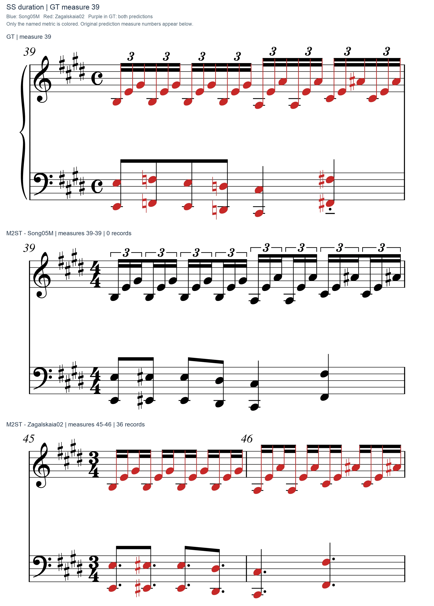
Listen and follow this excerpt (GT, two XML predictions, two performance MIDIs)
Open standalone player · 0.5x / 0.75x slow playback · one context measure on either side
MUSTER Onset: shift records: GT 54 · Song05M 0, Zagalskaia02 10 records
GT54 is the largest local shift-record difference: 0 versus 10. Song05M preserves the GT timing in the matched sequence. In Zagalskaia02, the flowing triplet line becomes ordinary thirty-seconds, eighths and smaller fragments across prediction measures 69-70, while the lower line is reorganized differently. For example, the GT opening E3 has duration 1, reduced to 1/2, whereas the upper triplet notes change from 1/6 to 1/8. These factors (1/2 and 3/4) differ: a single tempo or unit rescaling cannot restore both voices. This is a substantive rhythmic difference, unlike GT39.
The ten highlighted shift records are a localization aid. Overall OnsetER is based on rhythm-correction cost (RCC), not this local count: RCC rises from 97 to 221 and OnsetER from 6.50570% to 14.99320%. Duration and offset colors are deliberately absent from this figure.
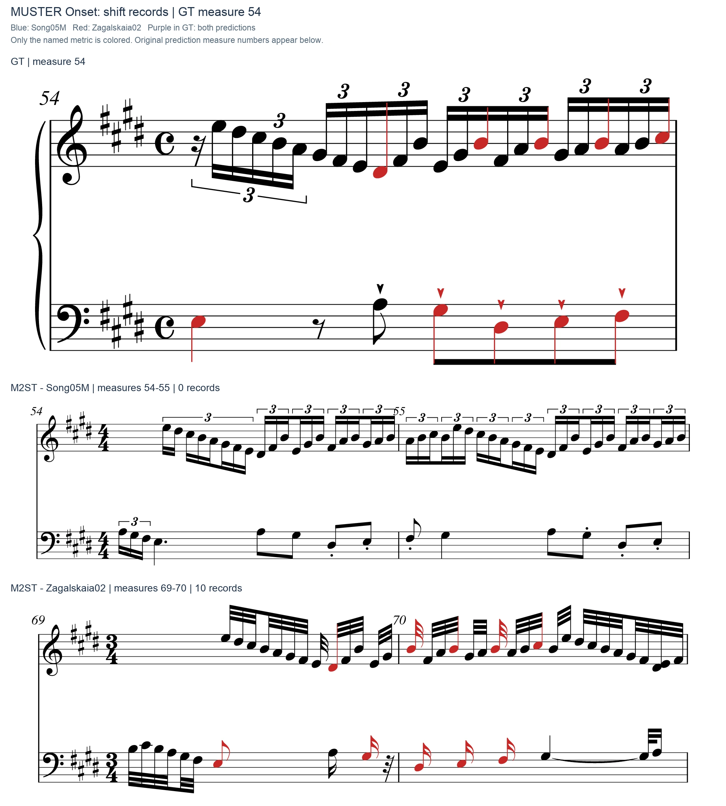
Listen and follow this excerpt (GT, two XML predictions, two performance MIDIs)
Open standalone player · 0.5x / 0.75x slow playback · one context measure on either side
MUSTER Onset: scale records: GT 5 · Song05M 1, Zagalskaia02 4 records
This separate view shows only scale records, 1 versus 4 in GT5 (tied for the largest between-performance increase). The upper triplet line and bass do not consistently retain the same time relation. It complements the shift view without treating scale counts as SS duration or adding them directly to the overall OnsetER percentage.
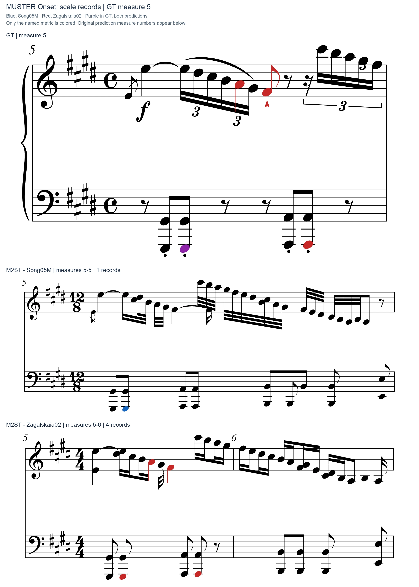
Listen and follow this excerpt (GT, two XML predictions, two performance MIDIs)
Open standalone player · 0.5x / 0.75x slow playback · one context measure on either side
MUSTER OffsetER: GT 53 · Song05M 3, Zagalskaia02 12 records
GT53 is the largest offset-record difference: 3 versus 12. The marked notes belong to the ending-time comparison after MUSTER normalizes the prediction using neighboring matched onsets. Some lengths are changed explicitly; other notes have the same quarterLength duration and still end at the wrong normalized position. In this window E5 has duration 1/2 in both files, yet its corrected ending is tick 5032 rather than the GT ending 5040 (GT resolution 24 ticks per quarter).
| Paired note | GT duration | Prediction duration | GT end tick | Corrected prediction end tick |
|---|---|---|---|---|
| E5: GT53 / prediction68 | 1/2 | 1/2 | 5040 | 5032 |
Across the whole piece, 49 of Song05M's 205 offset records and 90 of Zagalskaia02's 280 have unchanged raw durations. OffsetER is an ending-time metric that also depends on the surrounding timing correspondence; it is not a test of onset position alone.
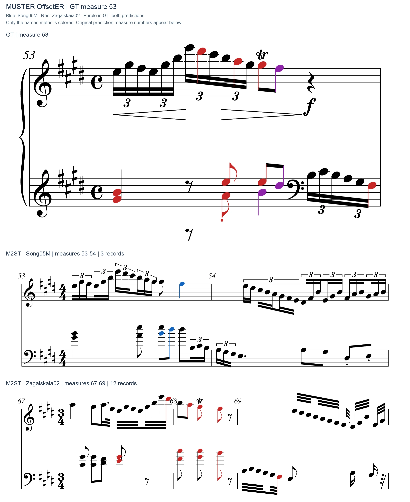
Listen and follow this excerpt (GT, two XML predictions, two performance MIDIs)
Open standalone player · 0.5x / 0.75x slow playback · one context measure on either side
MUSTER MissRate: GT 32 · Song05M 1, Zagalskaia02 4 records
GT32 has a tied-largest MUSTER miss increase: 1 versus 4. Inspect the descending tail and the start of the next measure. In Zagalskaia02, B5, A5 and G-sharp5 reappear together at the start of prediction38 instead of continuing in the GT32 order. The comparison therefore includes GT33 and prediction38, rather than hiding those surviving pitches outside the crop. These misses include an onset/grouping failure, not three entirely absent pitch classes. The shared F-double-sharp5 record lies next to the ornament boundary and also needs the conversion/alignment caveat.
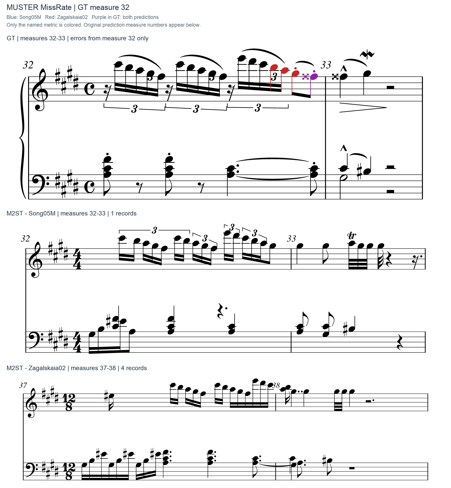
Listen and follow this excerpt (GT, two XML predictions, two performance MIDIs)
Open standalone player · 0.5x / 0.75x slow playback · one context measure on either side
MUSTER ExtraRate: GT 22 · Song05M 0, Zagalskaia02 4 records
GT22 gives the largest context-anchored extra difference, 0 versus 4. Zagalskaia02 prediction26 contains the additional C-sharp5 / B4 / C-sharp5 / C-sharp5 short attacks marked red. This is a nearby ornament/repeated-note region. The figure establishes additional unmatched attacks under the evaluator's correspondence; deciding whether every one is musically superfluous requires considering ornament realization. Extras are colored in the prediction only because they have no GT partner.
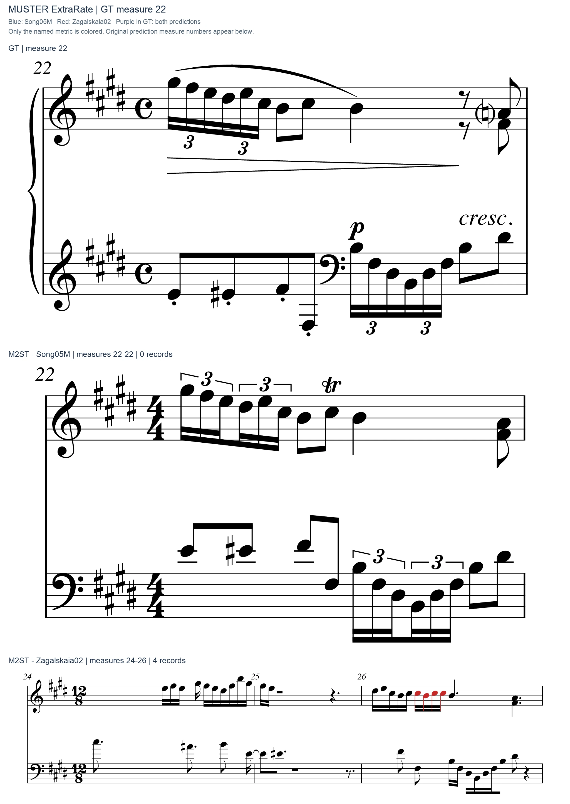
Listen and follow this excerpt (GT, two XML predictions, two performance MIDIs)
Open standalone player · 0.5x / 0.75x slow playback · one context measure on either side
MUSTER PitchER: GT 9 · Song05M 1, Zagalskaia02 3 records
Both complete conversions have nine MUSTER pitch records, so pitch is not the source of the overall gap. GT9 localizes 1 versus 3 records. Some reference ornament events enter the evaluator as compound pitch strings, and timings can change which nearby note gets paired. The colored pairs show what the evaluator compared, not proof that the model replaced each reference pitch with that exact predicted pitch. Against complete GT, both PitchER values are exactly 0.595238%.
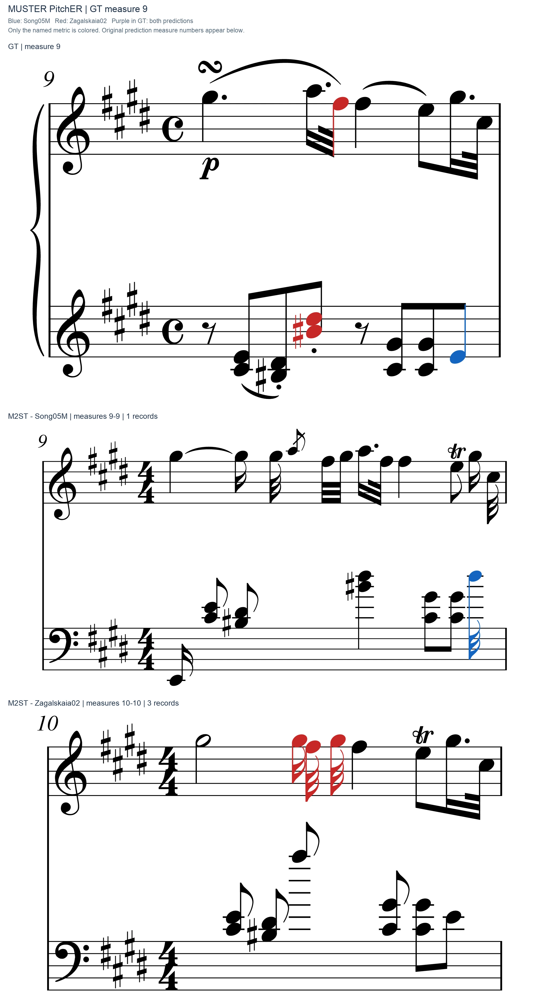
Listen and follow this excerpt (GT, two XML predictions, two performance MIDIs)
Open standalone player · 0.5x / 0.75x slow playback · one context measure on either side
SS miss: GT 5 · Song05M 0, Zagalskaia02 4 records
GT5 has a tied-largest SS miss increase, 0 versus 4, but all four bass notes are present. They are G-sharp1/G-sharp2 at local quarterLength 1 and A1/A2 at 3, each of duration 1/2. Zagalskaia02 prediction5 contains the same four pitches at the same local positions and durations. The differently stretched upper line changes the onset-set/DTW correspondence, leaving these bass notes unmatched. The SS extra figure below colors the corresponding unmatched prediction notes separately.
| Bass pitches | GT5 onset | Prediction5 onset | GT duration | Prediction duration |
|---|---|---|---|---|
| G-sharp1, G-sharp2 | 1 | 1 | 1/2 | 1/2 |
| A1, A2 | 3 | 3 | 1/2 | 1/2 |
This is a concrete alignment residual. It does not justify discarding all SS misses elsewhere or changing the reported 32-versus-50 whole-piece counts.
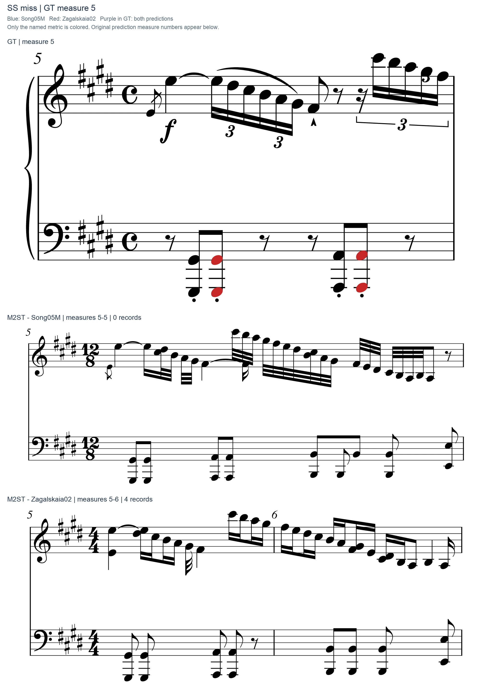
Listen and follow this excerpt (GT, two XML predictions, two performance MIDIs)
Open standalone player · 0.5x / 0.75x slow playback · one context measure on either side
SS extra: GT 5 · Song05M 0, Zagalskaia02 4 records
The same GT5 context gives 0 versus 4 SS extras, tied for the largest increase. Only the prediction-side G-sharp1/G-sharp2 and A1/A2 are colored here. These are the same bass events documented in the separate miss view, retained at identical local positions and durations. The paired increase in SS miss/extra is not evidence of four missing sounds plus four new sounds.
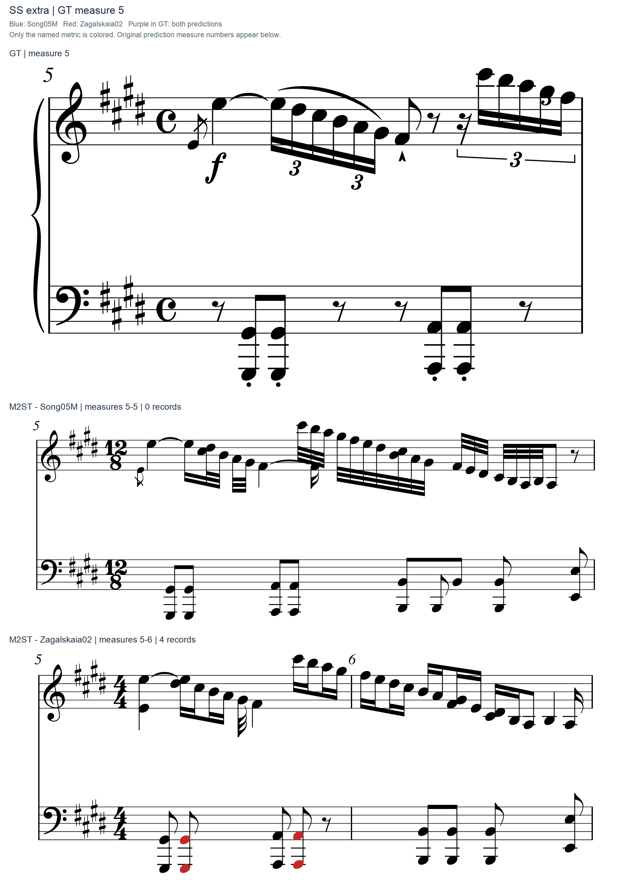
Listen and follow this excerpt (GT, two XML predictions, two performance MIDIs)
Open standalone player · 0.5x / 0.75x slow playback · one context measure on either side
SS staff: GT 24 · Song05M 0, Zagalskaia02 3 records
Whole-piece SS staff increases from 17 to 34. GT24 is a tied-largest local increase, 0 versus 3: B3, F-sharp3 and D-sharp3 move from the GT upper staff to the lower staff in prediction29. This changes the staff/voice presentation of the descending figure while retaining those pitches. Staff agreement and ease of reading are different questions; a lower-staff assignment can be reasonable, so this is reported as a concrete notation change rather than an automatic readability penalty.
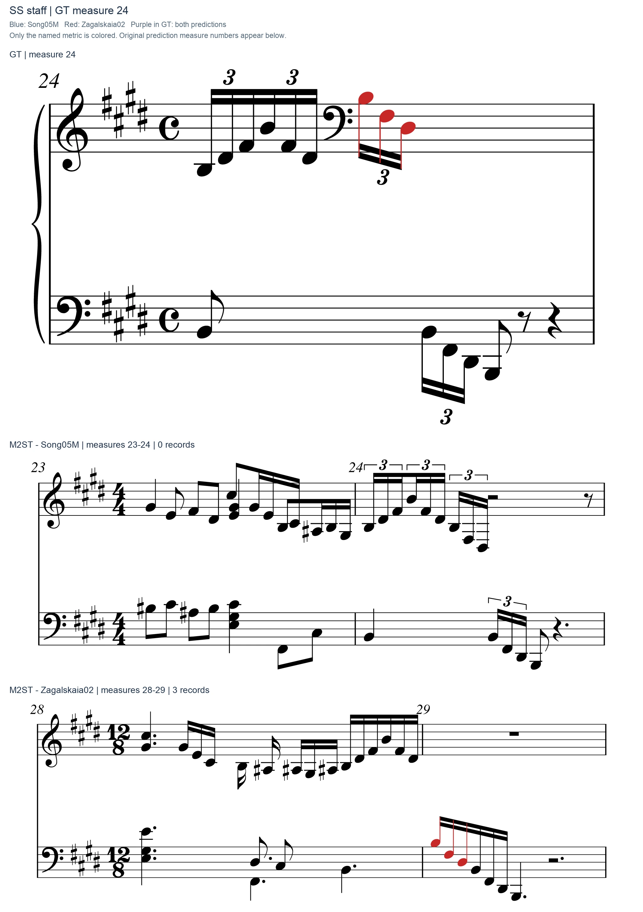
Listen and follow this excerpt (GT, two XML predictions, two performance MIDIs)
Open standalone player · 0.5x / 0.75x slow playback · one context measure on either side
SS stem: GT 29 · Song05M 26, Zagalskaia02 1 records
The higher-MeanER performance is better on this metric overall: 220 versus Song05M's 304 rerun errors. GT29 is tied for the largest local improvement, 26 versus 1. Song05M turns most lower-staff triplet stems upward where the GT uses downward stems; Zagalskaia02 largely preserves the reference directions. Both predictions still use a bass clef for the high lower-staff passage, so better direction agreement does not by itself establish better readability. This example deliberately shows an improvement rather than selecting a local reversal that would imply every metric worsens.
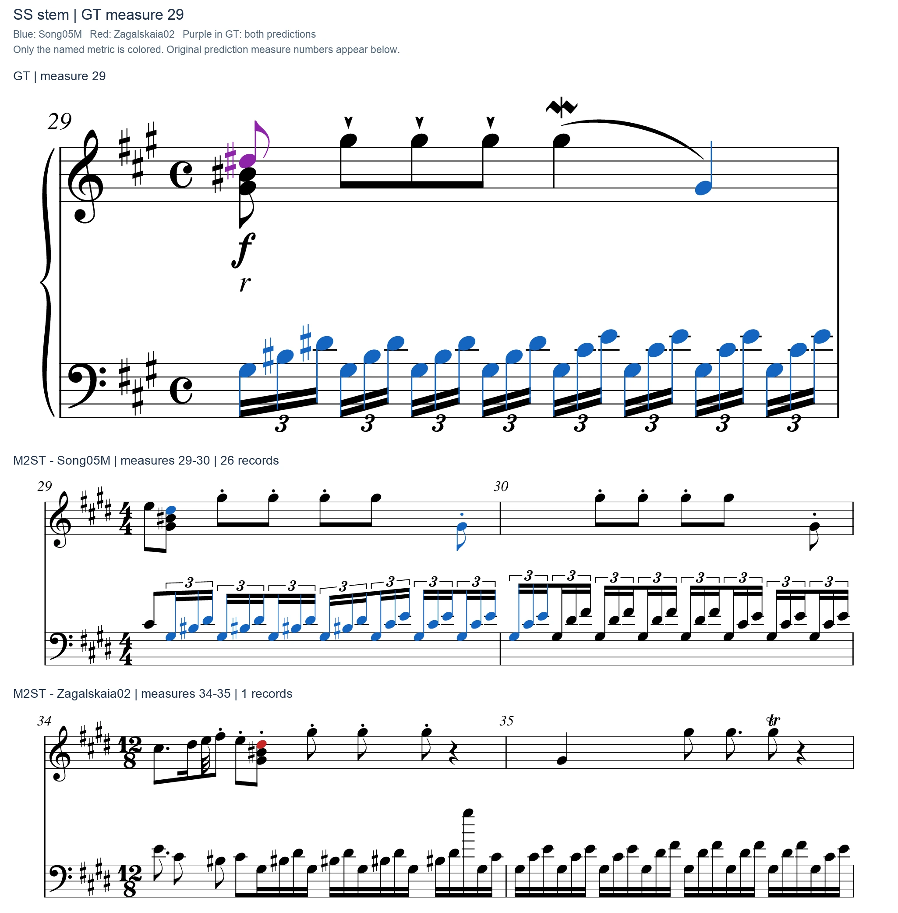
Listen and follow this excerpt (GT, two XML predictions, two performance MIDIs)
Open standalone player · 0.5x / 0.75x slow playback · one context measure on either side
SS spell: GT 39 · Song05M 2, Zagalskaia02 2 records
Spelling also has no whole-piece deterioration: 7 versus 5 rerun errors. GT39 is a simple shared example, 2 versus 2: the natural F2/F3 bass notes become E-sharp2/E-sharp3 in both outputs. Sounding pitches are unchanged. Both predictions use the four-sharp key signature here, so correct key signature selection does not eliminate local enharmonic spelling errors. The figures color spelling only, independently of the duration colors in the same measure.
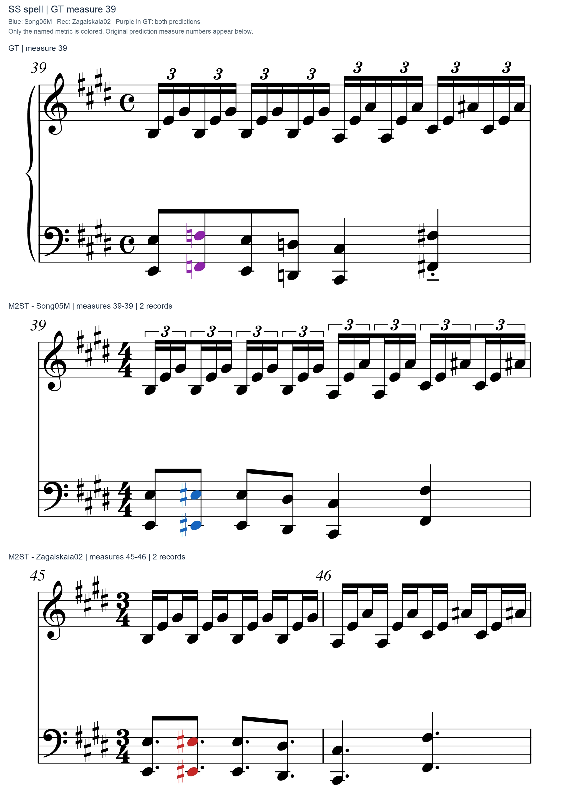
Listen and follow this excerpt (GT, two XML predictions, two performance MIDIs)
Open standalone player · 0.5x / 0.75x slow playback · one context measure on either side
MeanER: arithmetic attribution, without an invented note-level highlight
MeanER averages five MUSTER rates. SS duration, staff, stem and spelling are not included. The largest contributions to this pair's MeanER gap come from onset and offset, together 83.7%. This attributes the numerical gap, not the physical cause of the model errors.
| MUSTER component | Contribution to MeanER gap (percentage points) |
|---|---|
| PitchER | +0.00008 |
| MissRate | +0.21196 |
| ExtraRate | +0.32328 |
| OnsetER | +1.69750 |
| OffsetER | +1.04934 |
Evaluation scope and provenance
Default MUSTER includes 1,512 GT notes for Song05M but stops after 1,511 for Zagalskaia02. Rescoring the existing correspondences against complete GT adds one Zagalskaia02 miss (37 to 38), leaves pitch, extra, RCC and offset counts unchanged, and yields MeanER 8.21431% versus 4.91931%, a gap of 3.29500 points. Original and complete-GT controls are kept separate. The featured windows are unaffected by that final-note truncation.
All new plotted error records map uniquely to original XML note elements. Excerpts inherit key, meter and clef state, preserve musical note children, and add only layout/IDs/colors. Static plots use the core window; audio readers add one context measure on either side. Original performance MIDI is rendered with the same system piano as the earlier study, then cropped; performance-to-GT cursor interpolation is an approximate reading aid. Score audio is generated from each excerpt's own notation, so unit changes must be considered when comparing playback speed.
This public edition contains rendered excerpts, synthesized audio and the numerical summary. Complete sources, detailed logs and original server paths remain private. Download the public numerical summary. Evaluation and reproduction protocol. Archived Ravel comparison.
Rechecked and updated 29 October 2026. The four best/worst case studies and the Masycheva01 model comparison retain their original scope.